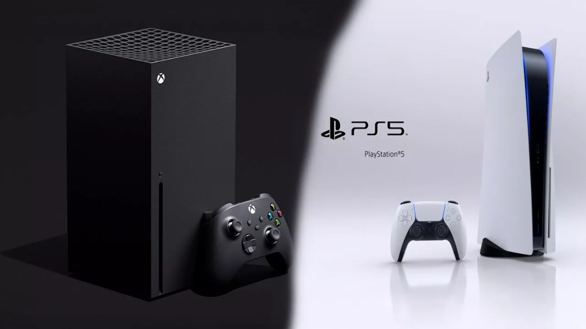

22.10.2020
Итак, будущее гейминга почти наступило. Sony и Microsoft наконец выложили все свои карты на стол. Новые консоли PlayStation 5 и Xbox Series X|S выйдут в продажу уже в ноябре, и нам наконец стали известны все их характеристики и технические особенности.
В этой статье мы сравним самые важные параметры сразу четырех анонсированных приставок девятого поколения: PlayStation 5 и PlayStation 5 Digital Edition, а также Xbox моделей Series X и Series S. Материал нацелен на помощь тем, кто решил обзавестись новой игровой консолью, но пока не знает, на какой из платформ остановить выбор.
Приступим к сравнению характеристик PS5 и Xbox Series X|S. Первый раунд нашего сопоставления PS5 vs Xbox касается корпусов приставок и их функциональности.
Габариты PlayStation 5 составляют 390 x 104 x 260 мм (Ширина xВысота xГлубина) при весе 4,5 кг.
Габариты PS5 Digital Edition за счет отсутствия дисковода немного компактней стандартной модели - 390 x92 x260 мм и 3,9 кг.
Согласно подсчетам специалистов, новые консоли Sony являются одними из самых крупных приставок в истории. Впрочем, если для Вас габариты PS5 являются недостатком, его легко исправить: в комплектации игровых приставок входят подставки, позволяющие безопасно разместить PlayStation 5 в горизонтальном положении. В таком виде она занимает пространство, примерно сравнимое со стандартным Blu-ray плеером.
Система охлаждения PS5 Digital Edition использует разъемы, равномерно расположенные по бокам и с задней стороны консоли, поэтому предпочтительного способа расположения у нее нет. Вам только нужно проследить, чтобы приставка не упиралась вплотную в объекты, которые могут препятствовать работе воздухозаборников.
Габариты приставок Xbox Series X|S отличаются гораздо сильнее. Измерения корпуса Xbox Series X составляют 301 x151 x 151 мм, а вес 4,5 кг, в то время как «младший» альтернативный вариант, Xbox Series S, помимо прочего не оборудованный дисководом, может похвастаться самым компактным размером в девятом поколении на данный момент: всего 275 x 150 x65 мм и 2 кг.
Обе приставки Microsoft оборудованы несъемными ножками по бокам и на нижних панелях.
Консоль Xbox Series X возможно расположить исключительно в вертикальном положении из-за особой системы охлаждения, которая принимает холодный воздух нижними воздухозаборниками, пропускает его через всю консоль и выводит через верхние отверстия: в горизонтальном режиме вентиляция практически не осуществляется без специальной подставки.
Модель Xbox Series S напротив, лучше работает в горизонтальном положении, так как вентиляция производится через решетки, расположенные на правой и левой стороне консоли.
Второй раунд сравнения PS5 vs Xbox Series затрагивает центральные процессоры.
Мощные центральные чипы и увеличенный объем RAM– одна из важнейших черт консолей девятого поколения, в котором создатели приставок и игр планируют сосредоточить внимание не только на графических красотах, но и на глубокой проработке виртуальных миров. От мощности процессора зависят многие сложные вычисления, такие как продвинутый Искусственный Интеллект противников.
Для этих целей Sony и Microsoft используют кастомные процессоры AMD линейки Zen2.
PlayStation 5 и PS5 Digital Edition оснащены восьмиядерными ЦПУ AMDZen2, работающих на переменных частотах до 3,5 ГГЦ. Количество оперативной памяти – 16 Гб поколения GDDR6.
Xbox Series Xи Series S оборудованы процессорами AMDZen2 с восьмью ядрами. Мощность версии SeriesX– от 3,6 до 3,8 ГГЦ, версии SeriesS– немного более скромные 3,4 – 3,6 ГГЦ. Количество ОЗУ стандарта GDDR6 приставок – 16 Гб для SeriesXи 10 Гб для SeriesS.
Таковы голые цифры. Однако не стоит забывать, что уровень производительности видеоигр всегда зависит не только от «железа», на котором они запущены, но и от качества оптимизации самих игр и от технических решений, принятых разработчиками. Поэтому быстродействие той или иной игры на разных платформах может разниться. Лучше всего себя показывают эксклюзивные проекты, изначально заточенные только под одну модель консоли.
Этот раунд сравнения PS5 vs Xbox Series X и Series S также может удивить схожестью принятых Sony и Microsoft решений. Консоли нового поколения отказались от старого формата жестких дисков и перешли к полностью твердотельным накопителям, отличающимся гораздо большим быстродействием.
PlayStation 5 и PS5 Digital Edition могут похвастаться рекордно быстрыми накопителями на 825 Гб со скоростью чтения 5,5 Гб/с и до 9 Гб/с при загрузке текстур с компрессией.
Xbox Series X и S оборудованы внутренними хранилищами со скоростью чтения от 2,4 Гб/c и до 4,8 Гб/с (подгрузка компрессированных текстур). Объем внутренней памяти составляет 1 Тб для XboxSeriesXи 512 Гб для XboxSeriesS.
Финальный раунд – финансовый. Несомненно, для тех, кто еще не определился, купят ли они PlayStation 5 или Xbox Series, решающую роль может сыграть цена товара.
Продажа PlayStation 5 официально запустится в России 19 ноября. Рекомендуемая Sony стоимость стандартной версии консоли с Blu-rayдисководом – 46 999 рублей, облегченная «цифровая» модель Digital Edition обойдется в 37 999 рублей.
Новинки Xbox появятся на прилавках чуть раньше – 10 ноября. Примерная цена «старшей» консоли XboxSeries X, заявленная Microsoft, составляет 45 590 рублей; облегченная Xbox Series S без дисковода стоит меньше – всего около 26 990 рублей.
Впрочем, делать выводы о преимуществе PS5 или Xbox Series X|S исключительно на основании цены вряд ли мудро; следует учесть все особенности приставок.